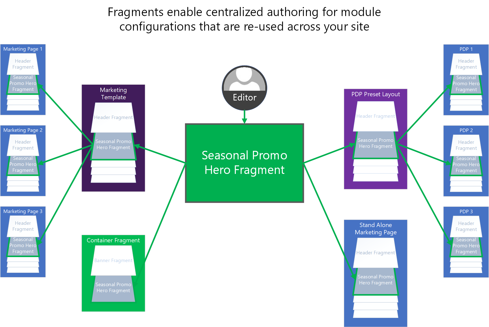

Arbeiten mit Fragmenten
Important
Dynamics 365 Retail ist jetzt Dynamics 365 Commerce und bietet umfassende Handelsfunktionen für alle Kanäle – von E-Commerce über Shops bis hin zu Callcentern. Weitere Informationen zu diesen Änderungen finden Sie unter Microsoft Dynamics 365 Commerce.
In diesem Thema wird beschrieben, warum, wann und wie Fragmente in Microsoft Dynamics 365 Commerce verwendet werden.
Übersicht
Fragmente ermöglichen ein zentrales Authoring für Modulkonfigurationen, die auf Ihrer Website wiederverwendet werden müssen. Beispielsweise werden Kopf- und Fußzeilen sowie Banner häufig als Fragmente konfiguriert, da sie auf mehreren Seiten gemeinsam genutzt werden. Sie können sich Fragmente als Miniaturwebseiten vorstellen, die in andere Seiten Ihrer Site eingefügt werden können. Fragmente haben ihren eigenen Lebenszyklus. Mit anderen Worten, sie werden als unabhängige Entitäten in den Authoring-Tools erstellt, referenziert, aktualisiert und gelöscht.
Nachdem Fragmente konfiguriert wurden, können sie überall dort verwendet werden, wo Module in Ihrer Site-Struktur verwendet werden können. Fragmente können auf Seiten, in Layouts, in Vorlagen und in anderen Fragmenten referenziert werden.
Note
Fragmente können bis zu sieben Ebenen tief in anderen Fragmenten verschachtelt werden.
Wenn Sie beispielsweise eine saisonale Veranstaltung über mehrere Seiten auf unserer Website bewerben möchten, können Sie ein Fragment verwenden. Der erste Schritt beim Erstellen eines neuen Fragments ist die Auswahl des Modultyps, von dem aus Sie beginnen möchten. In diesem Beispiel können Sie das Fragment aus einem Hero-Modul erstellen.
Note
Fragmente können aus jedem Modultyp erstellt werden.
Sie können dann das Hero-Fragment mit Ihrem spezifischen Werbeinhalt konfigurieren. Sie können es auch nach Bedarf lokalisieren. Das neue eigenständige Hero-Fragment kann dann als vorkonfiguriertes Modul auf Ihrer Website verwendet werden. Sie können es einfach Vorlagen, bestimmten Seiten oder anderen Fragmenten hinzufügen, die Hero-Module enthalten können.
Alle Stellen, an denen das Fragment hinzugefügt wird, verweisen auf das von Ihnen erstellte zentrale Hero-Fragment. Wenn Sie Änderungen am Fragment veröffentlichen, wirken sich diese Änderungen sofort auf alle Stellen aus, auf die das Fragment auf der Site verweist. Daher bieten Fragmente eine leistungsstarke und effiziente Möglichkeit, Modulkonfigurationen auf einer Site wiederzuverwenden und zentral zu verwalten. Indem Sie sie effektiv einsetzen, können Sie die Flexibilität erheblich steigern und die Kosten für die Verwaltung des Websiteinhalts senken.
Die folgende Abbildung zeigt, wie Fragmente verwendet werden können, um das Authoring gemeinsam genutzter Modulkonfigurationen auf einer E-Commerce-Site zu zentralisieren.

Fragment erstellen
Sie können entweder ein neues Fragment erstellen oder eine vorhandene Modulkonfiguration als Fragment speichern.
Speichern einer vorhandenen Modulkonfiguration als Fragment
Gehen Sie folgendermaßen vor, um ein zuvor konfiguriertes Modul in ein wiederverwendbares Fragment im Commerce Site Builder zu konvertieren.
- Öffnen Sie eine Seite oder Vorlage, die das Modul enthält, das Sie in ein Fragment konvertieren möchten.
- Wählen Sie im Gliederungsbereich links oder direkt in Visual Page Builder das zuvor konfigurierte Modul aus.
- Wählen Sie die Auslassungspunkte (...) neben dem Namen des Moduls im Gliederungsbereich oder in der Symbolleiste des ausgewählten Moduls im Visual Page Builder aus.
- Wählen Sie Als Fragment teilen.
- Geben Sie im Dialogfeld Als Fragment speichern einen Namen für das Fragment ein.
- Wählen Sie OK aus, um die Modulkonfiguration als Fragment zu speichern, das anderen Seiten hinzugefügt werden kann.
Neues Fragment erstellen
Führen Sie die folgenden Schritte aus, um ein neues Fragmente im Commerce Site Builder zu erstellen.
- Wählen Sie im linken Navigationsbereich Fragmente aus.
- Wählen Sie Neu aus. Ein Dialogfeld Neues Fragment mit allen verfügbaren Modultypen wird angezeigt. Wie bereits erwähnt, können Fragmente aus jedem Modultyp erstellt werden.
- Wählen Sie einen Modultyp für Ihr Fragment.
Tip
Durch Auswahl eines generischen Containermodultyps erhalten Sie die größte Flexibilität, wenn Sie Ihr Fragment später aktualisieren und konfigurieren müssen.
Hinzufügen, Entfernen oder Bearbeiten von Fragmenten auf einer Seite
Die folgenden Prozeduren beschreiben das Hinzufügen, Entfernen und Bearbeiten von Fragmenten.
Fragment hinzufügen
Führen Sie die folgenden Schritte aus, um ein Fragmente im Commerce Site Builder zu erstellen.
Wählen Sie im Gliederungsbereich links oder direkt im Visual Page Builder einen Container oder Slot aus, zu dem untergeordnete Module hinzugefügt werden können.
Wählen Sie die Auslassungspunkte (...) neben dem Namen des Containers oder Slots aus. Wenn Sie alternativ Visual Page Builder verwenden, wählen Sie das Pluszeichen (+) aus.
Wählen Sie Fragment hinzufügen.
Note
Wenn der Container oder Slot keine neuen untergeordneten Module unterstützt, ist die Option Fragment hinzufügen nicht verfügbar.
Suchen Sie im Dialogfeld Fragment auswählen nach einem Fragment, das Sie hinzufügen möchten, und wählen Sie es aus. Wenn keine verfügbaren Fragmente aufgelistet sind, müssen Sie möglicherweise zuerst ein Fragment aus einem Modultyp erstellen, den der ausgewählte Container oder Slot unterstützt.
Wählen Sie Ihr gewünschtes Fragment aus, das dem Container oder Slot auf Ihrer Seite hinzugefügt werden soll.
Note
Die Module, die in einem Container oder Slot zulässig sind, werden durch die Seitenvorlage oder die eigenen Definitionen der Module definiert.
Ein Fragment entfernen
Führen Sie die folgenden Schritte aus, um ein Fragment aus einem Slot oder Container auf einer Seite im Commerce Site Builder zu entfernen.
- Wählen Sie links im Gliederungsbereich die Auslassungspunkte (...) neben dem Namen des zu entfernenden Fragments und anschließend das Papierkorbsymbol aus. Alternativ können Sie das Fragment in Visual Page Builder und das Papierkorbsymbol in der Symbolleiste des Fragments auswählen.
- Wenn Sie aufgefordert werden, das Entfernen des Fragments zu bestätigen, wählen Sie OK aus.
Note
Wenn Sie ein Fragment von einer Seite entfernen, entfernen Sie einfach den Verweis darauf von dieser Seite. Sie löschen das Fragment nicht von Ihrer Site. Um Fragmente von Ihrer Site zu löschen, müssen Sie die Benutzeroberfläche des Fragmentinspektors verwenden. Sie können Fragmente nur dann von einer Site löschen, wenn derzeit keine Seiten, Vorlagen oder anderen Fragmente auf sie verweisen.
Fragment bearbeiten
Um Fragmente zu bearbeiten, müssen Sie die Benutzeroberfläche des Fragmenteditors verwenden. Diese Beschränkung ist beabsichtigt. Es hilft, sicherzustellen, dass Autoren den Prozess der Bearbeitung der Module für eine bestimmte Seite nicht mit dem Prozess der Bearbeitung von Fragmenten verwechseln, die möglicherweise auf mehreren Seiten geteilt werden.
Führen Sie die folgenden Schritte aus, um ein neues Fragmente im Commerce Site Builder zu bearbeiten.
- Wählen Sie im linken Navigationsbereich Fragmente aus.
- Wählen Sie unter Fragmente das zu bearbeitende Fragment aus.
- Bearbeiten Sie die Moduleigenschaften und die Struktur des Fragments nach Bedarf. Der Vorgang ähnelt dem Vorgang zum Bearbeiten von Modulen, die in der Seiteneditoransicht bearbeitet werden.
Sie können ein Fragment auch bearbeiten, indem Sie es auf einer Seite, in einer Vorlage oder in einem übergeordneten Fragment auswählen und dann Fragment bearbeiten im Eigenschaftenbereich rechts.
Zusätzliche Ressourcen
Übersicht über Vorlagen und Layouts